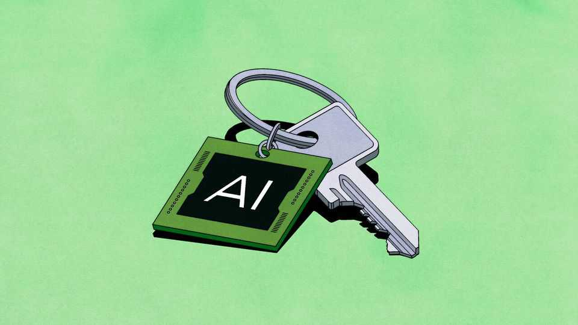

How to share AI riches
From Donald Trump to Sam Altman, the idea of redistributing them is catching on. Does it make sense?
June 11th 2026

THE artificial-intelligence boom has minted vast fortunes. Jensen Huang’s stake of nearly 4% in Nvidia, the chipmaker he co-founded in 1993, is worth $175bn, up 50-fold in seven years. Anthropic’s latest funding round, which valued the AI lab at nearly $1trn, more than doubled the estimated wealth of its boss, Dario Amodei. Yet as new plutocrats gain riches, most Americans doubt the gains from AI will be widely shared. Less than one in three think the technology will make ordinary people richer.
Populists on left and right are scrambling for an answer. On June 5th Donald Trump appeared to endorse a proposal, championed by Sam Altman of OpenAI, under which AI firms would voluntarily contribute equity to a public wealth fund, with the returns eventually flowing to households. “It almost becomes a partnership with the American public,” Mr Trump declared. “It would make ’em rich.” Bernie Sanders, a leftie senator, wants a one-off 50% tax on AI firms’ value, paid in stock, to give Americans a “direct ownership stake”. Mr Amodei has floated the idea of “universal capital accounts”. These proposals reflect a growing belief that if AI generates extraordinary wealth, the public should share in it.
Beneath the populist packaging lies a serious idea. Wealth in America is already concentrated: the top 1% own nearly a third of it and the bottom half just 2.5%. If AI substantially raises the returns to capital relative to labour, that divide could widen; superintelligence, if it materialises, could make much human labour obsolete, leaving the gains to whoever owns the machines. In such a future, giving the public a stake starts to look prudent.
In one sense, citizens already have a claim on AI success. Governments tax corporate profits, which is an efficient way of sharing in firms’ upside without picking winners or exposing taxpayers to losses. The case for AI wealth funds is therefore in part political. Direct ownership stakes make the gains from AI more visible, while providing insurance against a future in which a handful of firms capture an ever-larger share of economic activity.
Still, pursuing that goal raises practical questions. The first is how the assets get into public hands. Mr Altman has proposed voluntary donations, but the mechanics are tricky. Newly issued shares would dilute existing investors—including, in OpenAI’s case, Microsoft—who may object; Mr Altman himself owns no equity in his firm, so he has no founder stake to donate. As the AI labs prepare to go public, such dilution would soon hit pension funds and retail investors, too. Voluntary schemes can be meaningful or painless, not both. If governments buy stakes directly, that would put taxpayers on the hook for loss-making firms at frothy valuations. Mr Sanders’s approach—forcing firms to transfer equity—would raise more money but would be hard to distinguish from expropriation, inviting legal battles and chilling investment by reducing the expected rewards of future success.
The next question is how much the schemes would raise. Suppose OpenAI and Anthropic each gave 3% of their equity, the midpoint of the 1-5% range discussed by industry advocates. At current valuations, that would seed a fund of $55bn or so. If the stake earned a healthy 10% a year, the fund would grow to $140bn or so after a decade. Paying out 4% annually, a rule of thumb for preserving a fund in perpetuity, would amount to $20 a year per American annually. To be sure, the point of such schemes is that AI may prove anything but ordinary. Yet even if it does change everything, the firms’ combined value rises ten- or 20-fold and the state picks the right winners, Americans would get a yearly payout of a few hundred dollars. This is not enough to make anyone rich.
Since it is anyway unclear where AI’s rents will ultimately accrue, this argues for looking across the industry. An annual levy of 0.2% of market value, along the lines proposed by some advocates of a broad wealth tax, could raise roughly $40bn a year at the current valuations of AI labs, chipmakers and cloud providers. But deciding what counts as an AI firm—and how much of Amazon, Google or SpaceX does—would be contentious. And the resulting dividend would still be at best a few hundred dollars per American annually. A nice bung—but well short of a universal basic income or meaningful insurance against widespread job displacement.
Disbursing the proceeds involves more choices. One model is Norway’s oil fund, whose returns help fund public services. Another is Alaska’s Permanent Fund, which invests the state’s resource revenues on behalf of residents and pays them annual dividends (similar to what OpenAI and Anthropic have proposed and we assumed in our calculations above). A third is something akin to the “Trump accounts” the president has proposed for American tots. These would be seeded by the state, compound over time and be used to fund college or a pension, say. The left may prefer the Norwegian way. Mr Trump would favour one of the other two.
Public ownership carries risks. It blurs the line between regulator and shareholder. Politicians may be unwilling to pursue antitrust action or impose costly safety rules on publicly owned firms, and happy to prop up stumbling ones (and their valuations). This may entrench incumbents and weaken competition. AI rents may also flow somewhere unexpected: electricity transformed society, but a wealth fund built around electric utilities would be a dud.
The best way to minimise such downsides may be a public wealth fund invested in a broad equity index. The capital could come from taxes on AI profits or mandatory equity contributions from across the AI economy—which, if the optimists are right, may one day mean most business. Even extraordinary returns would still probably translate into a modest dividend, arriving years from now. The harder questions—how to tax AI, how to regulate it and how to support displaced workers—would remain.■
Subscribers to The Economist can sign up to our Opinion newsletter, which brings together the best of our leaders, columns, guest essays and reader correspondence.